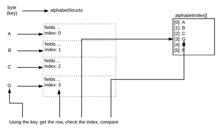

摘要：Ethereum是Block Chain的一种实现，而Block Chain在存储方面跟接近于一种分布式账本。每个加入到Ethereum网络中的节点都会有一份COPY。数据是存储在网络中的所有节点中。在这个方面，与传统的关系数据库有着完全不一样的特点。那么在基于Solidity的编程中，也会有着不一样的思路。这篇文章，主要是分享一下编程思路上与传统关系数据库的CRUD(Create, Read, Update, Delete)处理上的区别。
本篇是一个系列：
第一篇谈一谈Ethereum的数据（变量）存储的位置（Data Location），以及几个常用的数据类型。
第二篇会谈一谈Create，Read和Update的方法。
第三篇会谈一谈如何Delete.
Create & Insert
下面要完成的内容是：
- 给Struct里面赋值。
- 将Struct的对象保存在mapping中。
- 将Key插入到Array中。
将interface定义成下面的样子：
1 | function insertUser(address userAddress, bytes32 userEmail, uint userAge) |
步骤1和2由下面的代码来完成：
1 | function insertUser(address userAddress, bytes32 userEmail, uint userAge) |
第三步骤，将key插入到Array中：
1 | userIndex.push(userAddress); |
Read
下一步要演示一下如何在mapping中通过Key重现拿回value.
这个function本身并不返回key。
1 | function getUser(address userAddress) |
这个function比较简单的展示了返回userEmail和userAge。Sample Code可以比较简单的做如下的实现：
1 | function getUser(address userAddress) |
Update
下一步，按照输入的Key来更新mapping中的一个value. Interface可以简单的做如下定义：
1 | function updateUserEmail(address userAddress, bytes33 userEmail) |
或者update整个entity:
1 | function updateUser(address userAddress, bytes32 userEmail, uint userAge) |
如何判断Key是否存在？
在Create, Read, Update的时候，为了确保操作争取，我们第一步总是要验证这个Key是否已经存在，然后才能放心的做下一步操作。例如，在Update的时候，先检查Update的Key是否存在，如果存在，那么就可以进行更新。如果不存在，则可以选择插入数据生成一条新的，或者抛出异常。
在C#中，可以用Hashtable.ContainsKey，这样的method来判断Key是否存在。那么在 Solidity中，如何检查mapping里是否由某个Key已经 存在？Part 1 已经解释过，”Key本身并不会保存在mapping中，而是保存了Key值对应的keccak256 hash值，用来查找对应的value“。所以不可能遍历所有的已知KEY来判断某个KEY是否存在。
Ethereum的整个storage space在初始化的时候都回被置为0。如果想通过判断value是否为0，预判KEY是否存在，也是不可行的。因为从逻辑上说，value为0也有它自身的意义。
为了解决这个问题，就需要在UserStruct中加入一个flag来标识里面的数据是否已经被初始化过。然后通过判断这个flag是否为true，可以知道是否真实的有这个值存在（被赋值过）。
1 | struct UserStruct { |
在创建这个UserStruct的对象的时候，就对这个flag赋值为true. 那么在读取这个value的时候，我们也可以通过这个flag来判断是否已经赋值过，或者是一个default值。
1 | function isUser(address userAddress) |
通过这个方法，我们可以给代码逻辑添加更多的logical constraints, 保证代码逻辑的健壮性：
- 不能Insert一个已经存在的Key
- 不能Update一个不存在的Key
- 不能Read一个不存在的Key
这种设计在并不需要DELETE的时候是可以正常工作的。如果需要DELETE的功能，那么需要进行一些修改。我会在下一篇进行这方面的讨论。
用于替代这个flag ，可以加入一个Pointer。这个Pointer的作用，不仅仅可以确定是否已经做过初始化，同时也可以标识key所在的位置。命名为userIndex。代码如下：
1 | struct UserStruct { |
Pointer的作用
为了达到目的，在insert的时候要增加一些步骤。在UserStruct中增加的index pointer，在将UserStruct的对象插入到mapping的时候，同时将key所保存在Array的位置也一同赋值给UserStruct的index。总是将index赋值为userIndex.length。
1 | userStructs[newKey].index = userIndex.length; |
这种方式，Index的起始值为0，标识为Array的第一个位置。当userIndex –Array– , 压入一个新的KEY的时候，同时也将userIndex.Lenght – 1， 就是这个KEY所在的位置。明白了这个道理，为了减少gas的开销，上面的代码也可以优化为下面这种写法：
1 | userStructs[newKey].index = userIndex.push(userAddress)-1; |
参照的完整性
这个设计下，我们有了两个结构来存储数据。Array (userIndex) 和 Mapping (userStructs)。Array 用来作为KEY的索引，保存了我们所有已知的KEYs。Mapping用来存放UserStruct的记录。UserStruct对象的index，用来记录userIndex中KEY所存放的位置，从而能够取回KEY的内容。
然而这种设计存在一个重大的问题。一旦索引与存储的记录不同步，我们将面临严重的问题，可能会造成严重的BUG。Solidity本身特别擅长确保数据的完整行，代码执行也不会再这方面出错。所有我们要专注的在自己的代码逻辑方面的设计。
- 映射结构与索引之间存在双向绑定。
- 不允许任何操作违反规则＃1。业务逻辑必须是原子性的。 必须以”全部”的方式执行。 没有完全成功的操作要进行rollback。
同时建议将索引和映射设置为private，以确不会被child contracts意外的overwrite.
1 | mapping (address => UserStruct) private userStructs; |
检查KEY是否存在
如果说给定了一个KEY值(userAddress), 怎么来判断mapping中，它是否存在。为了要验证这个KEY是否存在，我们可以采用下面的步骤：
- 先从mapping中通过KEY拿到这个structure的对象，从里面拿到index pointer。
注意，这个时候，无论KEY是否真的存在，都会获得返回值。如果是真事存在的KEY，那么会返回有意义的值。如果是不存在的KEY，返回的会是0 （默认值）。但，反过来，如果这个时候读取到的是0，无法判断是否是存在或者不存在，因为原本保存的值可能就是0. 所以需要做下一步的判断。 - 通过index的值，在Array中获取保存的KEY值。
- 比较从Array中获取的KEY和输入的KEY，是否一致。
下面来举个栗子，比如说在mapping中减少是否有”G”这个KEY的值真实存在：
- 首先我们假设mapping不是空的，Array也不是空的，G真的存在。
- 在mapping中查找KEY为G的value。这个value的index的值是3.
- 在Array中查找userIndex[3]里面保存的内容。这里能够拿到它保存的值是”G”。
- 比较一个，我们要查找的KEY和Array里面保存的KEY的内容是否一致。”G” == “G”。可以证明G是存在的。

同样还是上面这张图。键入说我们要验证一个不存在的KEY—“X”。
- 如果Array是空的，那么这个值肯定不存在。
- 在mapping中查找KEY为X的value。由于X实际是不能存在的，这个value的index的值是0， 一个默认值。
- 在Array中查找userIndex[0], 这个时候返回的是KEY的内容—”A”。
- 比较A和X，不匹配。那么X是不存在的。
下面是示例代码：
1 | function isUser(address userAddress) |
在调用这个function的时候，如果检测到KEY不存在，我们可以抛出一个异常，让应用程序第一时间注意到这个问题：
1 | if(!isUser(userAddress) throw; // missing key |
Iterable Interface
总共插入了多少条数据在mapping中，这是一个比较常见的需求。Mapping不能获得已经插入了多少条数据，但是Array可以。这是我们设计Array这个结构在这里的目的之一。
1 | function getUserAtIndex(uint index) |
对于一个web3 client代码，可以这样调用：
先获得index的大小：UserCrud.getUserCount.call()*。然后，在for循环中，获取KEY值。在调用对应的function，从mapping中获取struct的对象值。
1 | for(row=0; row < count; row++) { |
Event Emitters
Smart Contract的一个特点就是可以回调contract外部的一些方法。在Smart Contract中嵌入一个event, 当contract内部的state发生变化的时候，调用这个事件。可以让外部的client application得到响应。这样，client app跟on-chain storage的数据进行双向互动了。为了方便理解，可以认为是数据库的数据发生改变的时候，会同时通知到client app。Client app可以同步更新本地的cache，而不需要时时刻刻去请求数据库。
为了实现这个目的，我们可以进行如下的实现：
- 定义一个getter，获取当前的状态
- 嵌入event 用了来update state changes
1 | event LogNewUser (address indexed userAddress, uint index, bytes32 userEmail, uint userAge); |
跟C#/JAVA的event一样。先是定义某种意义的事件。在状态发生相应变化的时候，回调这个事件。那么注册了这些事件的client application就会得到事件相应。例如，这里声明了一个LogNewUser, 在插入新用户的时候会被触发。LogUpdateUser在用户信息被更新的时候会触发。
DELETE
这篇的内容只是正对没有DELETE的情况下来进行讨论。userStructs 和userIndex的设计，在没有delete的时候可以很好的工作。但是一旦发生了DELETE动作，userStructs和记录的UserStrct对象的index就必须做相应的改变才能保持userStructs和userIndex中记录保持一致性。
对于这一点，将会在Part 3中进行讨论.
SAMPLE CODE :
1 | pragma solidity ^0.4.6; |
Sonic Guo